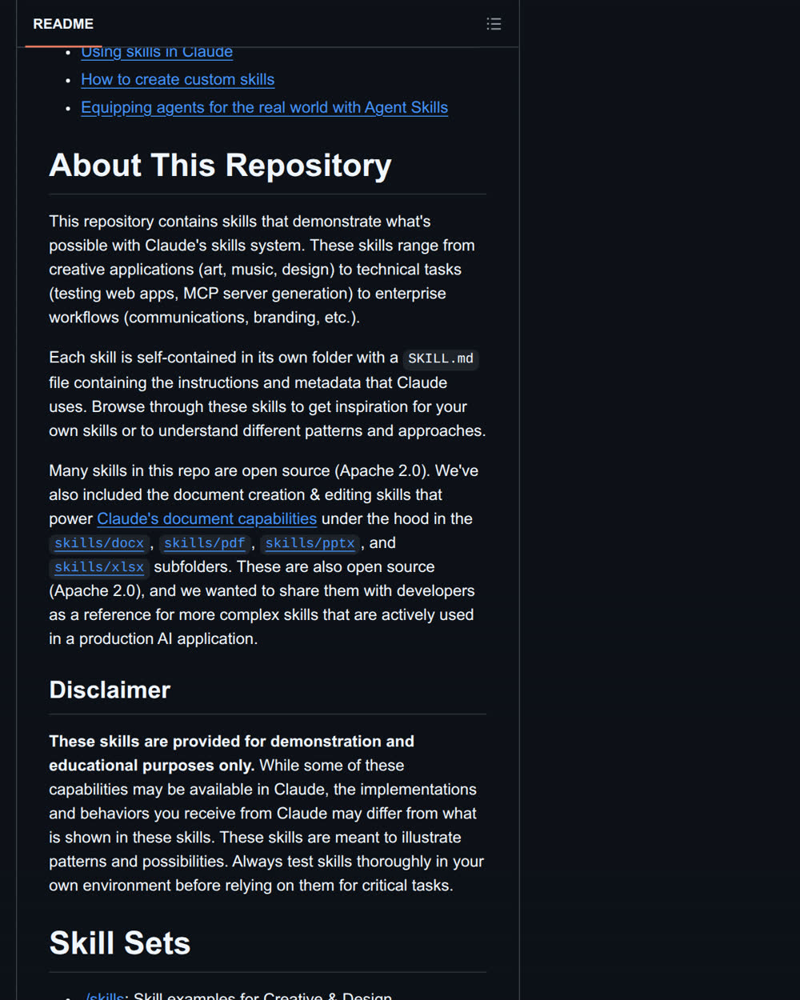
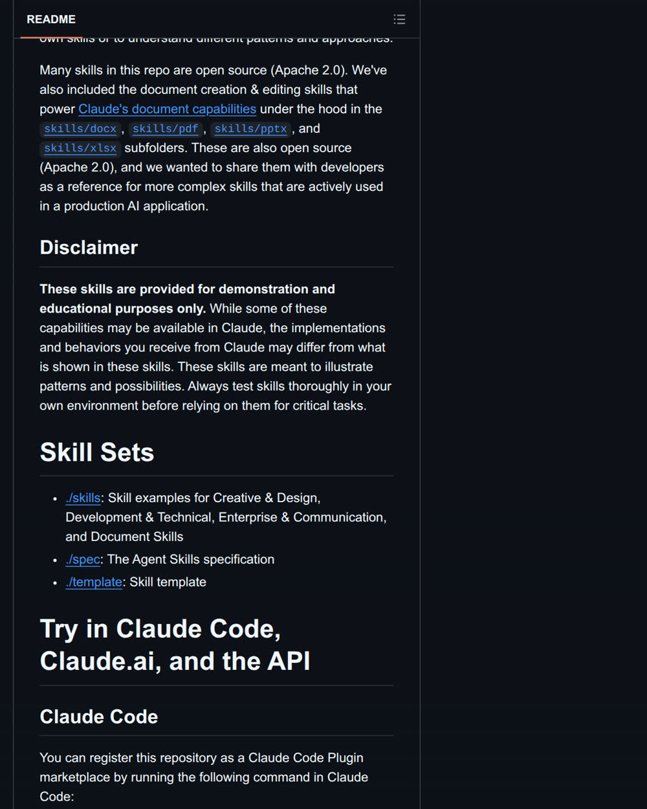
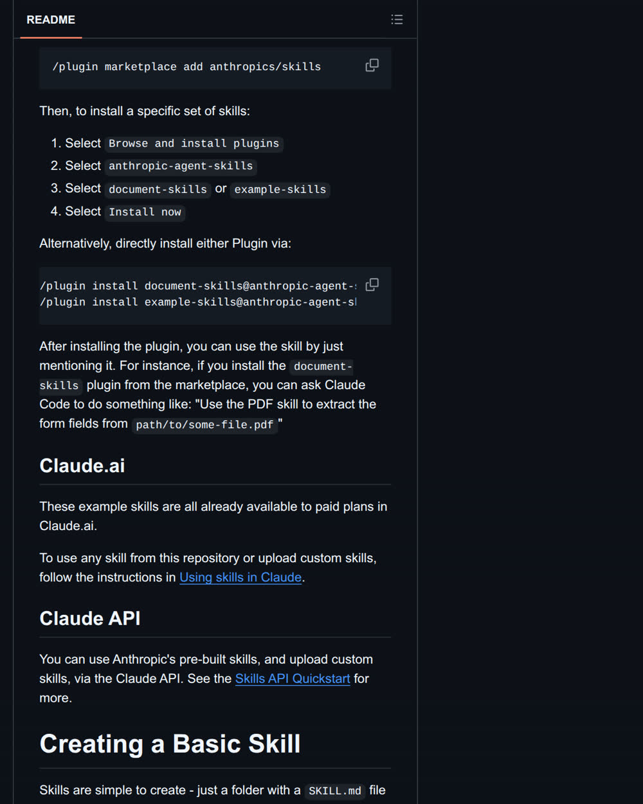

Anthropic Agent Skills
Teach Claude a task once and let it repeat the task the same way.

What it is
Agent Skills are folders of instructions, scripts and resources that Claude loads dynamically to do specialized tasks better. Anthropic keeps a public repository with example skills. Many skills in the repo are open source under Apache 2.0.
What it can do
- Teach Claude specific tasks in a repeatable way
- Bundle instructions, scripts and resources in one folder
- Define each skill in a SKILL.md file
- Examples from art and music to testing web apps
- Install skills in Claude Code with plugin commands
- Use pre-built skills and upload custom ones via the Claude API
What you could use it for
Repeatable work tasks
You could write a skill with your own instructions so Claude handles a recurring task the same way each time.
Creative projects
You could try the example skills for art, music and design as a starting point for your own ideas.
Testing web apps
You could use a testing-focused example skill to have Claude check a web app.
Your own custom skill
You could copy the template, write a SKILL.md with a name and description, and add your own instructions.
How to start
- Open the anthropics/skills repository on GitHub
- In Claude Code, run /plugin marketplace add anthropics/skills
- Install a set, e.g. /plugin install document-skills@anthropic-agent-skills
- Or use the example skills on a paid Claude.ai plan, where they are already available
- To build your own, copy the template and write a SKILL.md
What it costs
Good to know: The repo is free to view, but the sources only say the example skills are available on paid Claude.ai plans, so you need a Claude account; check the official site for current pricing.
A look inside



Official links
Sources
How this reel was made
Partner links: I may earn a commission if you sign up. It costs you nothing extra.